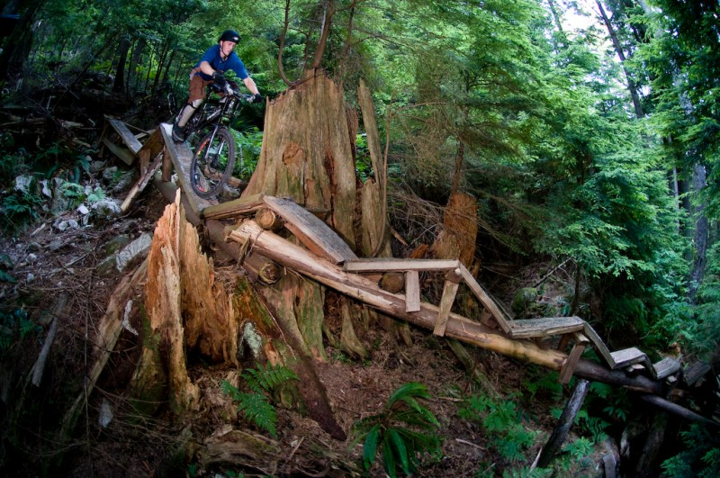
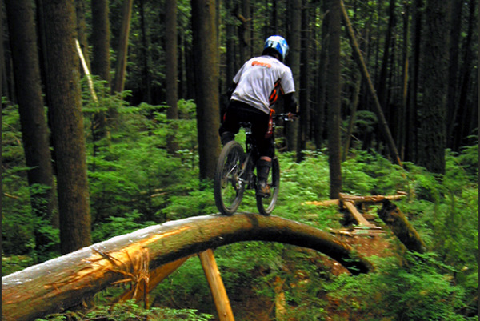
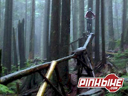

Your skill level must be this high to ride.
A relatively-recent epidemic has been plaguing the mountain biking community as of late: riders have been ruining trails in order to make them easier to ride. They remove that rock step to make a smooth path or chop those roots their pedals have been getting caught on. The trail is now easier and they are now happy and every other person who took the time and effort to improve their skills to ride said trail is now angry.
I've spent hours working to improve my mountain biking skills. I've watched videos and practiced what I saw, sessioned tough spots on my home trails, gotten advice from some of the best riders I know. I applied these lessons to the trails and got the return I expected: I became a better rider. I could clear spots that were a pipe dream earlier in the year. Who knew so much satisfaction could be had in the span of about 10 meters?
But it's obviously not just the accomplishment itself that fills me with joy. It's also everything that led up to it. The relentless practicing! The late nights in the driveway! The frustration in making an old mistake that was eliminated months ago! The countless attempts that were ultimately met with failure, time and time again! And it's not just me, nor is it just mountain biking. It's everyone in every field that has some type of what I call a merit-based barrier to entry.
Merit-based barriers to entry (MBBE) require a certain skill level to participate and virtually nothing else (outsides of the bare minimums of equipment). There's no way to directly pay one's way in. Connections on the "inside" can't provide exclusive access they do for industry jobs. There's only one way in: pure skill. Paying for courses and better equipment can help. Connections can get a foot in the door. And yet, even with all of these crutches and steroids, there's still only way in: pure skill.
With MMBEs the playing field becomes almost completely level, outside of genetic dispositions and some socioeconomic factors. But this is as close at it's gonna get to flat. And everyone should be supportive of this, given it solely showcases one's skills and nothing else about them. When people see me ride Night Train front-to-back and back-to-front flawlessly, there's no asking which family I'm from or where I went to university (although they may ask about the expensive bike I'm on). All they see is a skilled rider who's clearing the most technical trail in the greenbelt. Any questions like those above detract from the skills shown and the hard work taken to achieve them.
Disgustingly enough, there are still people out there who want to lower the barrier, whether for personal satisfaction ("hey, I finally did X [which I made significantly easier beforehand]!") or a misguided sense of morals ("everyone should be able to ride whatever trail they want to!"). The first will be addressed in a minute, but the second is both idiotic and wrong. All of these MMBEs protect non-mandatory activities. No one has to mountain bike—everyone chooses to. If someone wants to ride some trail, there is no one stopping them besides themselves.
As to the pitiful "hey, I finally did X"... Do you also load up three plates on the bar, find the strongest guy in the gym to help spot, let him curl half of it, then loudly boast about how you just benched three plates? What is being done post-lowering is likely nowhere near the impressiveness of what could have done before, both the actual achievement itself and the long road that led to it. Sure, the comparison is there ("this is now just a bit easier than before, what's the big deal?"), but the behind-the-scenes preparation is discounted almost entirely due to lack of visibility.
Become an avid proponent of keeping barriers at the height they were originally set, or even consider raising them. Speak up when others attempt to lower barriers. Advocate for others to rise up, not lower down. Understand and appreciate the concept of hard work and the unique feeling of satisfaction and fulfillment that comes with an achievement long after starting down the road towards it. Do not bow in the face of the weak mob trying to accommodate for all.